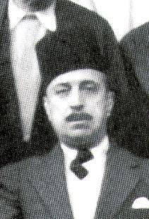

البورتريه 9 من 10 · النادي الإفريقي والأجانب قبل الاستقلال
مصطفى صفر
من رموز النادي الإفريقي
13 وثيقة من الأرشيف · الصفحات 69 إلى 80 من الكتاب
كان مصطفى صفر رئيسًا للنادي الإفريقي من 1927 إلى 1930، وظلّ دائمًا قريبًا من النادي، ويُعَدّ من رموزه الأسطورية.
قلّة هي الشخصيات التي تجسّد مفارقات تونس في العهد الاستعماري كما يجسّدها مصطفى صفر.
كان رجلًا مثقفًا وسياسيًا محنّكًا، ومؤسسًا لمؤسسات ثقافية مثل الرشيدية، وحظي بمكانة وجاهة رفيعة. غير أنّ وراء هالة المثقف الملتزم هذه ولاءً جليًّا للمستعمِرين.
بعد أشهر قليلة فقط من أحداث 9 أفريل 1938 المأساوية، التي قمعت خلالها القوات الاستعمارية بعنف المظاهرات الوطنية وقتلت عشرات الشبّان من المناضلين التونسيين، أدلى مصطفى صفر بتصريح لافت سيبقى محفورًا في أرشيف الاستعمار. وقد تناقلت الصحافة الاستعمارية الفرنسية هذا التصريح على نطاق واسع خلال سنة 1939، ولا سيما في الصحف التالية:
▪️ لو بوتي جورنال (Le Petit Journal)، 12 جويلية 1939 ▪️ لو كورييه دو سون إي لوار (Le Courrier de Saône-et-Loire)، 2 جانفي 1939 ▪️ لو بيان بوبليك: الاتحاد البورغوني (Le Bien Public : Union bourguignonne)، 3 جانفي 1939 ▪️ لويست إكلير (L'Ouest-Éclair)، 3 جانفي 1939 ▪️ لاكسيون فرانسيز: لسان حال القومية المتكاملة (L'Action française : organe du nationalisme intégral)، 12 جويلية 1939 ▪️ لو بوتي كونتوا: جريدة يومية جمهورية ديمقراطية (Le Petit Comtois : journal républicain démocratique quotidien)، 2 جانفي 1939 ▪️ لو بوتي دوفينوا (Le Petit Dauphinois)، 12 جويلية 1939
في هذه المنشورات، استُخدم صوت مصطفى صفر للتدليل على «الولاء الإسلامي» لفرنسا. وهذا مقتطف نموذجي من أقواله:
«إنّ محبّة التونسيين لفرنسا هي اليوم محلّ إجماع. ولن نجد، بين المسلمين أو بين الإسرائيليين، صوتًا واحدًا مخالفًا. ولا يمكن أن يقبل الشعب التونسي بأيّ قوة أخرى غير فرنسا حاميةً له. « L'affection des Tunisiens pour la France est aujourd'hui unanime. On ne trouverait pas, parmi les musulmans ou parmi les Israélites, une seule voix discordante. Aucune autre puissance que la France ne pourrait être tolérée comme protectrice par le peuple tunisien.
ثمّ إنّ هذا التحالف الفريد في الواقع يرمز إلى الإرادة الفرنسية التونسية في توحيد مصالحهما وتقاليدهما. D'ailleurs, cette alliance unique dans les faits symbolise la volonté franco-tunisienne d'unir leurs intérêts et leurs traditions.
إنّ فرنسا لا تضايقنا بأيّ شكل من الأشكال: فهي تعمّر البلاد، وتترك لنا حرياتنا، حتى بالنسبة إلى المسلمين. وفرنسا ليست متسلّطة، بل تتصرّف بلباقة، ونحن معشر المسلمين نقدّر جميعًا هذا السلوك. La France ne nous gêne en aucune manière : elle met le pays en valeur, nous laisse nos libertés, et même pour les musulmans. La France n'est pas envahissante, elle agit avec tact et nous savons tous les musulmans apprécier cette conduite.
إنها تحترم عاداتنا وتساعدنا على بناء دولة حديثة. Elle respecte nos coutumes et nous aide à réaliser un État moderne.
لذلك نجدّد اليوم وفاءنا وتعلّقنا بفرنسا.» Pour cela, nous renouvelons aujourd’hui notre fidélité et notre attachement à la France. »
هذه الكلمات، التي نطق بها إطار سامٍ في المنظومة التربوية والجمعياتية التونسية آنذاك، تبدو بمثابة تنكّر صريح لشهداء أفريل 38، وخيانة لتضحيتهم باسم انخراط كامل في المشروع الاستعماري الفرنسي. وأضاف صفر أنّ هذه الرابطة بين فرنسا وتونس تمثّل «اتحادًا مقدّسًا للمصالح والتقاليد» « union sacrée des intérêts et des traditions »، بل وصف فرنسا بأنها «وطن الحريات» « patrie des libertés ».
ليس هذا الموقف أمرًا هيّنًا. فهو يكشف الشرخ بين نخبة متعلّمة، متعلّقة أحيانًا بصدق بالثقافة الفرنسية، وجماهير شعبية تتطلّع إلى التحرّر الوطني. ولم يُلقَ هذا الخطاب في إطار خاص أو عابر، بل في إطار مؤسّسي رسمي، وهو ما يمنحه دلالة سياسية أكبر.
ضابط في وسام جوقة الشرف
السيد صفر ضابط في وسام جوقة الشرف (الفرنسي، بطبيعة الحال): انظر جريدة لو بوتي ماتان بتاريخ 9 مارس 1941.
وسامٌ ناله بفضل خدماته لفرنسا:
كان مصطفى صفر يحتلّ مكانة خاصة. فبوصفه عضوًا نافذًا في الإدارة وفي الأوساط الإصلاحية، رأى فيه البعض جسرًا بين السلطات الاستعمارية والمجتمع التونسي. وقد وصفه الجنرال جان بيار إستيفا بأنه «رجل ذو فكر منفتح وحديث، ولكنه قبل كل شيء ذو ولاء راسخ» « un homme d'esprit ouvert et moderne, mais surtout d'un loyalisme affirmé »، وهي شهادة نُشرت في لافريك دو نور إيلوستري (L'Afrique du Nord Illustrée) بتاريخ 26 أكتوبر 1935. ويُبرز هذا الوصف المادح تعقيد موقعه، إذ كان يحظى باحترام الفرنسيين لموقفه التصالحي، وينتقده أحيانًا الوسط الوطني بسبب هذا القرب نفسه.
في تلك الحقبة، كانت مسألة اللغة العربية في التعليم تبلور التوترات بين أنصار الإدماج والمدافعين عن الهوية الوطنية. وكان الجنرال إستيفا، رغم إظهاره قدرًا من الانفتاح، يعارض بشدّة إقرار العربية لغةً إلزامية في المدرسة. وفي هذا السياق المتوتّر برزت شخصية كبرى أخرى من شخصيات الحركة الوطنية التونسية: عبد الجليل الزواوش، الرئيس الأسبق للترجي الرياضي التونسي في عشرينيات القرن الماضي، والمدافع المتحمّس قبل كل شيء عن الإصلاح التربوي.
كان عبد الجليل الزواوش (1873–1947) شخصية محورية في الحركة الوطنية التونسية، إذ جسّد المثقف الإصلاحي الملتزم بـتحديث بلاده تحت نير الحماية الفرنسية.
انخرط الزواوش بنشاط في حركة الشباب التونسي، التي تأسّست سنة 1907 مع علي باش حانبة والبشير صفر. وأدّى دورًا أساسيًا في إنشاء الأسبوعية التونسي (Le Tunisien)، أول جريدة تونسية ناطقة بالفرنسية، وكان مديرها وأبرز مموّليها. وقد شكّلت هذه الجريدة منبرًا للمطالب الإصلاحية، لا سيما في مجالَي التعليم والحقوق السياسية.
كان الزواوش أيضًا مدافعًا متحمّسًا عن التعليم باللغة العربية. ففي سنة 1932 نشر التعليم العربي في تونس (L'Enseignement arabe en Tunisie)، وهو مؤلَّف دعا فيه إلى إدماج اللغة العربية في المنظومة التربوية التونسية التي كانت تهيمن عليها الفرنسية آنذاك. وكان يرى أنّ النهوض بالعربية أمر جوهري للحفاظ على الهوية الثقافية التونسية ولتعزيز التحرّر الوطني.
بصفته رئيسًا لـالخلدونية من 1910 إلى 1919، وهي مؤسسة تعليمية أُسّست سنة 1896 لتحديث التعليم في تونس، عمل الزواوش على إدخال المواد العلمية واللغات الأجنبية في البرامج. وتفاوض للحصول على منح عمومية لتمويل منح دراسية وتحسين ظروف سكن الطلبة.
من جهة أخرى، انخرط الزواوش في الحياة السياسية بمشاركته في المجلس الاستشاري التونسي، حيث مثّل جهة تونس وجلس في لجنة المالية. وناضل من أجل إصلاحات اقتصادية واجتماعية، لا سيما بدعمه إنشاء تعاضديات حرفية مثل شركة السعادية، الرامية إلى تحديث قطاع الصناعات التقليدية التونسية.
وقاده التزامه الوطني كذلك إلى الدفاع عن حقوق التونسيين في مواجهة السلطات الاستعمارية. فحين اتُّهم بأنه المحرّض على مقاطعة الترامواي سنة 1912، رفع دعوى بتهمة الثلب ضد فيكتور دي كارنيير، صاحب جريدة المعمِّر الفرنسي (Le Colon français)، وكسبها في الاستئناف بالجزائر العاصمة.
يبقى عبد الجليل الزواوش رمزًا من رموز الحركة الوطنية التونسية، إذ كرّس حياته للنهوض بالتعليم وباللغة العربية وبالحقوق السياسية لمواطنيه.
بالعودة إلى مصطفى صفر، تجدر الإشارة إلى التباين بين موقفه التعاوني والتموقع الأكثر نضالية للزواوش. فعند وفاته في مارس 1941، تكفّلت السلطات الفرنسية، اعترافًا منها بالجميل، بكامل مصاريف جنازته، وهو تكريم نادر في ذلك العهد، كما أوردت جريدة لا ديباش تونيزيان (La Dépêche tunisienne) بتاريخ 3 مارس 1941. وتُبرز هذه البادرة جيّدًا الدور الذي كانت السلطات الاستعمارية تنسبه إليه: رجل نافع، وفيّ، ومندمج تمامًا في المنظومة التي كانت تديرها.
من أبرز الوقائع الشاهدة على ولاء مصطفى صفر لفرنسا انخراطه المباشر في الأعمال الخيرية الموجّهة إلى اللاجئين وأسرى الحرب الفرنسيين. وفي هذا الإطار نظّم حفلًا كبيرًا في المسرح البلدي بتونس، خُصّصت مداخيله بالكامل لـالإغاثة الوطنية الفرنسية (Secours National)، وهي هيئة رسمية لدعم الجنود الفرنسيين الأسرى. وقد مكّنت هذه التظاهرة من جمع مبلغ استثنائي يفوق 100 000 فرنك، كما تشهد بذلك جريدة لو بوتي ماتان (Le Petit Matin) في عددها الصادر بتاريخ 9 مارس 1941، حيث نقرأ:
«لعلّ من أعظم خدماته تنظيم السهرة الاحتفالية الكبرى في المسرح البلدي لفائدة الإغاثة الوطنية. وبفضله جُمع مبلغ يفوق 100 000 فرنك لإعانة أسرى الحرب الفرنسيين.» « L’un de ses plus grands services fut sans doute l’organisation de la grande soirée de gala au Théâtre Municipal, au profit du Secours National. Grâce à lui, une somme de plus de 100 000 francs fut recueillie pour venir en aide aux prisonniers de guerre français. »
وقد عزّزت هذه المبادرة، التي أشادت بها السلطات الاستعمارية أيّما إشادة، مكانة الجنرال صفر بوصفه شخصية وفيّة لفرنسا، في خضمّ الحرب العالمية.
المصدر: لو بوتي ماتان، 9 مارس 1941. انظر صورة الأرشيف أدناه:
قائد في وسام تنين أنام
من بين الأوسمة العديدة التي مُنحت لـمصطفى صفر خلال مسيرته، كان من أكثرها دلالة على اصطفافه مع المصالح الاستعمارية وسام قائد في وسام تنين أنام. وقد ورد ذكر هذا الوسام في لو بوتي ماتان بتاريخ 9 مارس 1941، ضمن سلسلة من الأوسمة الشرفية الفرنسية والاستعمارية التي استُحضرت تخليدًا لذكراه:
«كان الفقيد حاملًا لوسام جوقة الشرف وقائدًا في وسام تنين أنام…» « Le regretté défunt était titulaire de la Légion d'Honneur et commandeur du Dragon d’Annam… »
المصدر: لو بوتي ماتان، 9 مارس 1941. انظر صورة الأرشيف:
للتذكير، أُنشئ وسام تنين أنام بمبادرة من وزير البحرية الفرنسي سنة 1884، بالتعاون مع جول باتنوتر، مفوّض الجمهورية المبعوث إلى هوي. وكان الغرض منه مكافأة الشخصيات التي أسدت خدمات جليلة للحماية الفرنسية في الهند الصينية. وقد أُقرّ الوسام رسميًا في 14 مارس 1886 من قِبل الإمبراطور دونغ خان، إمبراطور
فيتنام، في إطار اتفاق مع فرنسا، وأصبح رمزًا قويًا للتحالف بين سلالة نغوين والقوة الاستعمارية.
كان الوسام يتألّف من خمس درجات:
الصليب الأكبر
الضابط الأكبر
قائد
ضابط
فارس
وكانت الأشرطة تختلف بحسب ما إذا تعلّق الأمر بالمدنيين (أخضر بحواشٍ برتقالية) أو بالعسكريين (أبيض، ثم أحمر بحواشٍ برتقالية). وقد أُدمج وسام تنين أنام ضمن الأوسمة الاستعمارية الفرنسية من 1896 إلى 1950، قبل أن يُلغى إثر الاعتراف باستقلال فيتنام.
وعليه، فإنّ التوشيح برتبة قائد في هذا الوسام الاستعماري الآسيوي كان يعني الإشادة العلنية بمساهمة صاحبه في توسيع المنظومة الإمبراطورية الفرنسية أو في تثبيتها – بل وأبعد بكثير من الإطار التونسي.
خلاصة القول، يجسّد مصطفى صفر وحده نخبة تونسية معيّنة في العهد الاستعماري: نخبة كرّمتها الجمهورية الفرنسية، ووشّحتها بأرفع أوسمتها الاستعمارية، وانخرطت بنشاط في أعمال تهدف إلى دعم المجهود الحربي… الفرنسي. وهو موقف يزداد وقعه لأنه يتناقض جذريًا مع موقف الزواوش، المثقف الملتزم، المدافع عن اللغة العربية، والخصم العنيد للإدماج الثقافي.
هذا الانقسام — بين التبعية والسيادة، والتواطؤ والمقاومة — نجده بصورة شبه مطابقة في مجال آخر: مجال الرياضة، وبالأخص في مسارات شخصيتين نافذتين أخريين من الحقبة نفسها.
ليس من قبيل الصدفة أن يكون مصطفى صفر والمنصف العقبي كلاهما رئيسين للنادي الإفريقي، في حين ترأّس عبد الجليل الزواوش والشاذلي زويتن الترجي الرياضي التونسي. فهذا التوزيع لا يرجع إلى مجرّد المصادفة، بل يُضيء في الحقيقة رؤيتين متعارضتين للدور الاجتماعي والسياسي لنادٍ رياضي في ظل الاستعمار.
على عكس الروايات المنمّقة التي يحلو للبعض ترويجها — والتي تصوّر النادي الإفريقي حصنًا وطنيًا، والترجي ناديًا «متفرنسًا» — فإنّ التاريخ الحقيقي، كما ترويه الوقائع والصحف والأرشيف، يُثبت العكس تمامًا. فقد اصطفّت الشخصيات القيادية في الإفريقي، في اللحظات الحاسمة من التاريخ الاستعماري، مع النظام القائم، بينما كانت شخصيات الترجي تخاطر، وتندّد بالتجاوزات، وتتضامن مع المظلومين.
هذه الحقيقة مزعجة، لكنها موثّقة.
والآن، لننظر في واحدة من أكثر الحالات كشفًا لهذا الشرخ الأخلاقي: المنصف العقبي، رئيس النادي الإفريقي من 1934 إلى 1946.